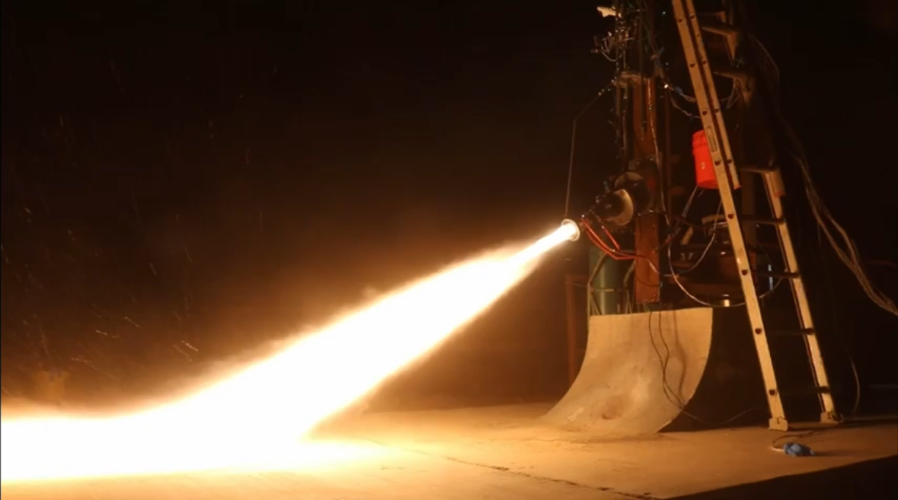
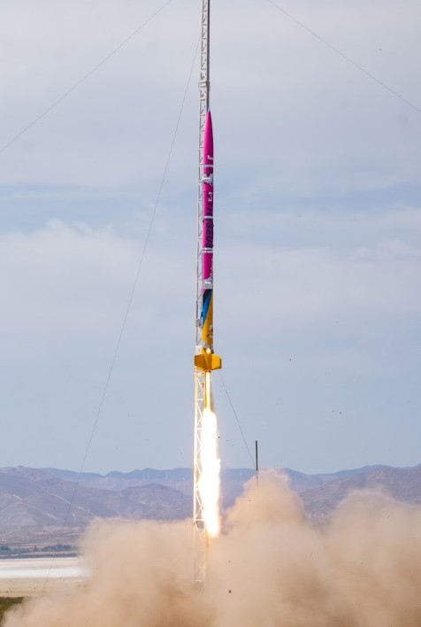

Beach Launch Team
The Theseus Team

Theseus was developed by a multidisciplinary student team responsible for propulsion, fluids, structures, avionics, recovery, software, and systems integration. After more than a year of design, manufacturing, and testing, the team completed Beach Launch Team's first liquid rocket launch in six years.
My Role
Fluids and Propulsion Operations
Throughout static-fire and launch operations, I supported the fluids and propulsion team by performing leak checks, setting up the ground-support side of the fluids system, troubleshooting issues throughout testing, and assisting with LOX loading before both the static fire and launch.
These activities required close coordination between the fluids, propulsion, and launch-operations teams to ensure the vehicle was ready for cryogenic loading and ignition.

Supporting cryogenic loading before static fire and launch.
December 2025
Theseus Static Fire
In December 2025, Theseus completed its integrated static fire and produced approximately 525 lbf of thrust.
Following the test, the team determined that several uninsulated LOX lines were contacting tubing connected to the fuel dome regulator. The cryogenic temperatures altered the regulator set pressure, changing the engine operating condition and reducing the achieved thrust.
Despite the issue, the test demonstrated successful ignition and integrated propulsion-system operation while identifying an important tubing-routing and insulation improvement before launch.

Integrated propulsion-system testing completed in December 2025.
April 2026
Theseus Launch
In April 2026, Theseus completed Beach Launch Team's first liquid rocket launch in six years.
I supported launch operations by helping prepare the fluids system, performing leak checks, troubleshooting issues, configuring the ground-support equipment, and assisting with LOX loading before flight.
The launch marked the culmination of the team's progression through manufacturing, water-flow testing, LOX cold flow, static fire, and final integrated flight operations.

Beach Launch Team's first liquid rocket launch in six years.
Skills Applied